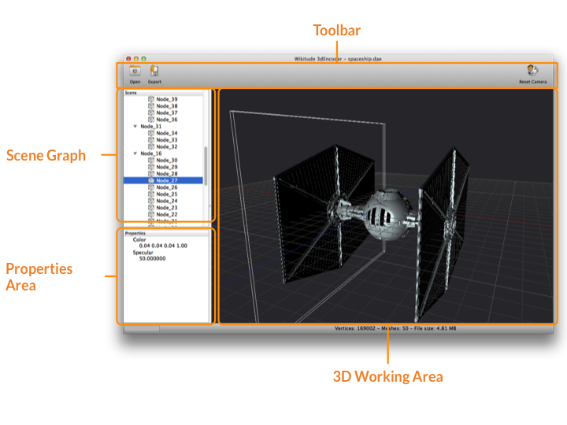

Wikitude 3D Encoder
Wikitude 3D Encoder - Getting Started with 3D models in Wikitude
Prerequisites
- A 3D model in FBX (.fbx) or Collada (.dae) file format
- The Wikitude 3D Encoder for Windows or MacOS X
General Workflow
3D content within Wikitude can only be loaded from so-called Wikitude 3D Format files (.wt3). This is a compressed binary format for describing 3D content, which is optimized for fast loading and handling of 3D content on a mobile devices. You still can use 3D models from your favorite 3D modeling tools (such as Autodesk® Maya® or Blender) but you'll need to convert them to the wt3 file format. Wikitude offers a desktop application called the Wikitude 3D Encoder, which handles the task of encoding your 3D source file. The Encoder is compatible with Autodesk® FBX® files (.fbx) and the open standard Collada (.dae) file formats for encoding to .wt3.
Each step for getting a .wt3 file from your 3D content is explained in more detail below.
- How to install the Wikitude 3D Encoder
- Supported 3D Models
- The Wikitude 3D Encoder user interface
- First Steps Using the Wikitude 3D Encoder
- Export files to .wt3
How to install Wikitude 3D Encoder
Install Wikitude 3D Encoder on Windows XP/ Windows 7/ Windows 8
- Download the Encoder from developer.wikitude.com/download
- Run the setup.exe installation file and follow the installation wizard
Install Wikitude 3D Encoder on Mac OS X
- Download the Encoder from devleoper.wikitude.com/download
- Open the .dmg installation image and drag the Wikitude 3D Encoder application to your Applications folder.
Supported 3D Models
The Encoder can import Autodesk® FBX® and Collada files. FBX is the preferred way as Collada's open standard allows for customized tags that might not be supported.
Features you can use in your 3D model source files:
- Static model (composed of triangles)
- Materials (Phong, Lambert, Blinn)
Features that are not (yet) supported
- Animations
- Normal Mapping
- Multi Textures
- NURBS
If you are not sure whether the 3D model at hand fits the requirements, try to encode it. You will receive a list of warnings and/or errors that tell you if the 3D content will work within Wikitude and/or uses unsupported features.
The Wikitude 3D Encoder user interface
On startup you are presented with the following interface.
- Toolbar for frequently used functions
- 3D working area to view your 3D content.
- Scene graph that lists all 3D content in a tree view
- A properties area that shows details about a selected node from the scene graph
- Status bar

First steps using the Wikitude 3D Encoder
Start by opening a supported 3D model file (.fbx, .dae). Select Open
from the toolbar or drag and drop a supported file onto the 3D working
area. Depending on the size of the file this can take a while. Once
finished, the 3D content will be shown in the 3D working area.
In case the Wikitude 3D Encoder encounters features not supported in
your file, it will present a list of errors or warnings in a dialog box. The
popup window summarizes the issues found during the import process. You
can bring up this information again at a later time via Window -> Show
Logging Window. Check the message and details carefully to identify
areas that need to be altered in your 3D model file, ensuring that it can be
encoded properly.
The 3D working area shows your encoded 3D model file in the exact way as it would show in Wikitude. Drag, pan and zoom to verify that your model looks ok. If you need to check specific properties (e.g. materials or lights) select the corresponding node in the scene graph. The details of a selected node are displayed in the properties view.
Export files to .wt3
Once you are satisfied with the encoded file, choose Export from the
toolbar. Then choose the location where the exported file should be
saved. Exported .wt3 files can be used directly in an augmented reality
experience using Wikitude. If you want to view a .wt3 file on the
desktop, simply chooseOpen` or drag and drop it into the
Wikitude 3D Encoder.
Wikitude 3D Encoder - Tips and Tricks
Choosing the right 3D Model for Wikitude
This guide should give an overview on how to choose the right 3D models for displaying it in Wikitude's augmented reality SDK. As Wikitude is basing 3D support on a converted file format (.wt3) it is good to follow the best practices below.
Input format
Supported 3D model files for encoding it into wt3 files are:
- FBX (.fbx)
- Collada (.dae)
We recommend using FBX wherever possible as tools support for FBX is widely available. Furthermore Collada allows you to include customized attributes that might not be understood by the Wikitude 3D Encoder.
Features you can use in your 3D model source files:
- Static model (made-up of triangles)
- Materials (Phong, Lambert, Blinn)
Features that are not (yet) supported
- Animations
- Normal Mapping
- Multi Textures
- NURBS
Good practice
Use png textures
Textures are stored in png format within wt3 files. While the Wikitude 3D Encoder takes care of automatically converting textures to png, it is good practice to use png textures in the source 3D Model file.
Use power of 2 textures
The current rendering hardware on mobile devices requires certain texture attributes if the texture is not a power of 2 textures. This can result in unexpectedly textured models. Using power of 2 textures yields a better performance when running on the device. A power of 2 textures has a width and height of 2^x - e.g. 64x64, 128x128, and so on.
Validate Texture paths
If your opened model appears without textures, very often the texture paths are not set correctly. Make sure your texture paths are valid and accessible. For example, check that they reference the texture files in a relative way and that all required textures exist and are accessible.
Keep texture size as low as possible
Keeping texture sizes as low as possible, while maintaining the required details, has several benefits. The exported .wt3 file will be smaller and therefore quicker to load over the network or from the application bundle. Additionally, it will take up less graphics memory thus freeing up space for additional models or content.
Use only one light
To maintain a good rendering performance, each part of your model (node) is only affected by a single light source. You may use multiple lights in the source file but at render time only a single node is selected to affect a mesh part. We make a best guess, utilizing the scene graph to assign a light to the node. If lighting is not required, simply remove the lights from your source 3D model file and/or set the corresponding material properties. This helps to speed up rendering.
Resolving problems
3D Model displays correctly in the Wikitude 3D Encoder but does not show on the device.
Check that your textures have a reasonable size. Limiting the textures to the lowest size that maintains the required details is recommended.
Textures are missing
Check the error/warning dialog during the import process of the model. It will give you detailed information on which textures are problematic. Make sure the texture paths are valid and accessible.